xhtml,html5,html,mathmlxhtml,html5,html<span
class="ecrm-1095">Proton Transfer Reaction Mass Spectrometric Investigations of Compounds of Relevance to</span>
<span
class="ecrm-1095">Homeland Security and Breath Analysis</span>Proton Transfer Reaction Mass Spectrometric Investigations of Compounds of Relevance to
Homeland Security and Breath Analysis
Proton Transfer Reaction Mass Spectrometric Investigations ofCompounds of Relevance to Homeland Security and BreathAnalysis
by
David Olivenza-León
A thesis submitted to
The University of Birmingham
for the degree of
Doctor of Philosophy
School of Physics and Astronomy
College of Engineering and Physical Sciences
The University of Birmingham
July 2019
Kinetic energy in the centre-of-mass frame of reference.
LCU
Liquid Calibration Unit.
LoD
Limit of Detection.
m/z
Mass-to-charge ratio.
MFP
Mean Free Path.
MS
Mass Spectrometer.
N
Gas number density.
N
Gas number density at standard pressure and temperature.
N
Avogadro’s number (= 6.02210
mol).
ncps
Normalised counts per second.
P
Standard pressure (= 1 atm = 1013.25 mbar).
PA
Proton Affinity.
PEEK
Polyether ether ketone.
ppbv
Parts per billion by volume.
ppqv
Parts per quadrillion by volume.
PTFE
Polytetrafluoroethylene.
PTR-MS
Proton Transfer Reaction Mass Spectrometry.
RFIF
Radio Frequency Ion Funnel.
SCI-MS
Soft Chemical Ionisation Mass Spectrometry.
SD
Source Drift region.
SIFT-MS
Selected Ion Flow Tube Mass Spectrometry.
SVOC
Semi-Volatile Organic Compound.
T
Standard temperature (= 0C
= 273.15 K).
Td
Townsend (= 10
V cm).
TDC
Time-to-Digital Converter.
TDU
Thermal Desorption Unit.
ToF-MS
Time-of-Flight Mass Spectrometer.
v
Drift velocity.
V
Drift voltage.
VOC
Volatile Organic Compound.
Chapter 1 Introduction
In this chapter the thesis outline and aim are presented after a brief introduction of soft chemical
ionisation mass spectrometry.
1.1 Soft Chemical Ionisation Mass Spectrometry
Soft chemical ionisation mass spectrometry (SCI-MS) comprehends a series of analytical techniques
which can be used to detect trace gases by means of the soft ionisation of volatile organic compounds
(VOCs). As opposed to other types of ionisation like electron impact (EI) ionisation, where
the excessive fragmentation produced by the 70 eV electrons usually generates congested
spectra, soft ionisation techniques yield little or no fragmentation, resulting in the readily
identification of compounds, which is vital when dealing with complex mixtures like ambient
air.
The main reactions occurring in soft chemical ionisation techniques are listed in Table 1.1, where
X or
XH represents
the reagent gas, M or MH is the targeted analyte and in the last reaction Z is a third body required to stabilise
the MX
adduct through collisions. Proton transfer reactions from protonated water (hydronium,
HO)
and its water clusters are the main object of study in the present thesis, although also charge transfer reactions
occurring between O
and nitroanilines are presented in chapter 6.
11">
11"> Charge transfer
11"> X + M
11">
11"> M + X
11">
11"> Proton transfer
11"> XH + M
11">
11"> MH + X
11">
11"> Hydride (H) transfer
11"> X + MH
11">
11"> M + XH
11">
11"> Adduct formation
11"> X + M + Z
11">
11"> MX + Z
11">
1.1.1 Thermodynamics of proton transfer
The protonation reaction of an analyte M from hydronium is shown in Equation 1.1. This reaction
occurs at near the collisional rate if the proton affinity (PA) of the analyte is higher than that of water
following.
(1.1)
Furthermore, protonation is also possible from the water clusters, if the proton affinity of the
analyte is higher than that of the nth water cluster, following Equation 1.2:
(1.2)
where (HO)HO
denotes the nth water cluster ion.
The proton affinity of some compounds of interest are shown in Table 1.2. One of the main
advantages of PTR-MS is that ambient air can be directly sampled as its main constituents
have smaller proton affinity than water, and hence they will not undergo proton transfer
and the reagent ion signal will not get depleted. Moreover, the proton affinity of the water
clusters is higher than that of the monomer, which translates into a softer protonation
process when an analyte reacts with these. Also, some analytes have a proton affinity close
to that of the reagent ions. This is the case, for instance, of isoflurane (670 kJ/mol) and
formaldehyde (712.9 kJ/mol). For these molecules, once they have been protonated, the
back reaction, or deprotonation reaction, (Equation 1.3, for n = 0, 1, ...) can also occur.
(1.3)
11"> Compound
11"> Formula
11"> PA (kJ/mol)
11"> Oxygen
11"> O
11"> 421
11"> Hydrogen
11"> H
11"> 422.3
11"> Nitrogen
11"> N
11"> 465
11"> Nitrogen oxide
11"> NO
11"> 531.8
11"> Carbon dioxide
11"> CO
11"> 540.5
11"> Nitrogen dioxide
11"> NO
11"> 591
11"> Water
11"> HO
11"> 684*
11"> Formaldehyde
11"> CHO
11"> 712.9
11"> Benzene
11"> CH
11"> 750.4
11"> Methanol
11"> CHO
11"> 754.3
11"> Acetic acid
11"> CHO
11"> 783.7
11"> Acetone
11"> CHO
11"> 812
11"> Water dimer
11"> (HO)
11"> 842*
11"> Ammonia
11"> NH
11"> 853.6
11"> Water trimer
11"> (HO)
11"> 937*
11"> Water tetramer
11"> (HO)
11"> 1013*
11"> *The proton affinity values for the water oligomers were calculated using the B3LYP functional and the 6-31+G(d,p)
basis set by Dr Peter Watts.
The tendency of a compound M to act as proton acceptor is called gas-phase basicity, GB, and it is
equal to the negative Gibbs energy, G, change of the reaction in Equation 1.4: GB(M) =
-G,
where the superscript
denotes the standard conditions of pressure and temperature. Similarly, the proton affinity
of a molecule is the negative of the enthalpy, H, change in Equation 1.4: PA(M) =
-H.
(1.4)
The Gibbs free energy and the enthalpy fulfil Equation 1.5, and, likewise, the proton affinity and
gas-phase basicity (GB) are related through Equation 1.6.
(1.5)
(1.6)
where T is the absolute temperature and
is the entropy difference between reactants and products in the protonation reaction at standard conditions
of pressure and temperature. This term is usually negligible for proton transfer reactions, and hence
H
G
and PA
GB. It is therefore possible to use the proton affinity as a measure of the spontaneity of a protonation
reaction.
For Equation 1.1, H
= PA(HO) - PA(M) and
G
= GB(HO) -
GB(M). Proton transfer following Equation 1.1 is thermodynamically allowed and will occur spontaneously
when G
< 0 (exergonic reaction) and, following the assumption made above,
H <
0 (exothermic reaction). Thus, protonation of the analyte M will occur when GB(M) >
GB(HO) and
PA(M) > PA(HO).
1.1.2 Kinetics of proton transfer
The fact that a proton transfer reaction is allowed does not say at what speed it will occur. However,
schiff1975flowing experiments in the 70s found that these reactions are occurring at or close to the
collisional rate, which means that a protonation will occurs in every collision [schiff1975flowing]. The
rate constant, k, at which the reaction in Equation 1.1 occurs is related to the concentration of the
reactants and products as shown in Equation 1.7. This rate equation shows that the decrease of
HO
with time is equal to the increase of MH
and that the reaction is governed by the concentration of the reactants and the rate constant.
(1.7)
where square brackets denotes concentration, usually given in
cm.
Assuming that the concentration of the analyte, [M], is much smaller than that of the hydronium
(which is the case when studying trace concentrations) and that only a proportion of the analyte is
protonated, Equation 1.7 can be integrated to get Equation 1.8.
(1.8)
where t is the reaction time (i.e. the time it takes the analyte molecules to cross the drift tube).
Following the same trace concentration approximation, Equation 1.8 can be approximated to
Equation 1.9, which allows to quantify the concentration of the analyte if the rate constant,
the reaction time and the concentration of the protonated analyte and reagent ions are
known accurately, assuming that the protonated analyte molecule is the only product ion.
(1.9)
1.1.3 Other reagent ions
Besides hydronium, other ions can be used as reagent in SCI-MS. These are generated by
introducing different gases into the ion source, whose working principle is explained
in the following chapter. The most common reagent ions used in SCI-MS besides
HO
are NO
and O.
However, these are also unwanted impurities that are found when the gas containing the analyte
is back-streamed from the drift tube into the ion source, but if the ratio of intensities of
NO and
O with
HO
is less than 3% their influence in the measurements can be ignored as they won’t contribute much to
the total product ion signal. This can be easily achieved by running the experiments using
N as
buffer gas instead of lab air.
Strictly speaking, with NO
and O we
must refer to the ionisation process as charge exchange or charge transfer rather than proton transfer.
NO
has a first ionisation energy of 9.26 eV, which is 12.1 eV for
O. This means
that they can undergo charge transfer reactions with molecules with ionisation energies below 9.26 eV and 12.1 eV,
respectively, and NO
can also undergo association if charge transfer is not energetically allowed (see Table 1.3).
Note that collisions with a third body Z are required to remove some energy from the
adduct formation to be stable. Adduct formation does not occur frequently in the case of
O as
organic molecules’ ionisation energies are generally in the range of 8 to 11 eV, which results in a
considerable amount of energy (e.g. up to 3 eV) deposited into the molecule, which usually originates
excessive fragmentation. In fact, for some molecules the mass spectrum resulting from charge transfer
with O
as reagent ion is quite similar to the EI spectrum, for which energies of 70 eV are commonly
used.
Furthermore, in some of my experiments I had a small pressure difference between the hollow
cathode and the drift tube to achieve the driest conditions possible. A consequence of this is that some
N is
introduced into the cathode and ammonium cations can be generated. The proton affinity of
ammonia is 853.6 kJ/mol [doi:10.1063/1.556018], so proton transfer from ammonium is
softer than that from hydronium, being actually energetically comparable to that from
(HO)HO.
However, the main problem in this case would be if the proton affinity of the analyte lies between that
of water and ammonia, as collision of the protonated analyte with ammonia would result in protonated
ammonia molecules.
11">
11"> Charge transfer from NO
11"> NO + M
11">
11"> M + NO
11">
11"> Charge transfer from O
11"> O + M
11">
11"> M + O
11">
11"> Adduct formation with NO
11"> NO + M + Z
11">
11"> M.NO + Z
11">
1.1.4 SCI-MS techniques
A brief description of three of the most widely used SCI-MS techniques is shown below.
1.1.4.1 Ion Mobility Spectrometry
In ion mobility spectrometry (IMS) ions are separated according to their mobilities through a gas. The
typical experimental setup is shown in Figure 1.1. An IMS device consists of three main parts: a
cathode, where the reagent ions are generated; a drift tube, where an electric field drags
the ions downstream as they are being separated; and a Faraday plate that collects the
ions.
Although radioactive ion sources are the most common ones [GonzalezMendez2017939],
other systems like corona discharge are becoming more popular [michalczuk2019isomer].
The reagent ions used in IMS are usually hydronium and its water clusters, which enter
the drift tube when the gate that separates the ion source and the drift tube is pulsed.
This is typically done at tens of Hz. The most common design of drift tube consists of a
series of stacked metallic rings, each one at a different electric potential in order to create a
uniform electric field, E, along the revolution axis. This dragging electric field, together with
the collisions with the background gas, make the ions reach the so-called drift velocity,
v, as
they move along the reactor until they are collected by the Faraday plate. This yields an ion current as
a function of the drift time.
The results are plotted in a histogram-like spectrum that shows the ion signal, typically in counts per
second (cps), versus drift time. It is also common to plot the data as ion signal versus the reduced ion mobility,
K, which can
be calculated from the Equation 1.11 once the ion mobility, K, has been calculated using Equation 1.10. Note
that P and
T denote the
standard pressure and temperature, P and T refer to the pressure and temperature in the drift tube, L is the length
of the drift tube, t is
the drift time and V
is the drift voltage. Peaks in this spectrum can be assigned to targeted compounds if their mobilities
are known. As a general rule, the lighter the ion, the higher its mobility is, although other
characteristics, like the ion’s structure, can affect the mobility as it influences how the ion interacts
with the buffer gas.
(1.10)
(1.11)
Some of the advantages of IMS are that it is quite cheap, small and does not need big
pumps as it works at a pressure similar to the atmospheric one. Due to this, this technique is
nowadays widely used in security and military applications [borsdorf2006ion]. For instance, it
can be often found in the security checks in airports. Moreover, its sensitivity allows it
to detect trace concentrations as low as parts per billion by volume (ppbv), allowing this
technique to be used for real time measurements without pre-concentration. On the other hand,
IMS lacks good selectivity, being many compounds difficult to be completely separated and
identified.
1.1.4.2 Selected Ion Flow Tube Mass Spectrometry
Unlike IMS, selected ion flow tube mass spectrometry (SIFT-MS) does not use a drift tube, but a flow
tube, to drag the ions downstream. As shown in Figure 1.2, a SIFT-MS instrument consist of an ion
source, a quadrupole mass filter, a flow tube and a mass analyser.
The reagent ions (e.g. HO,
NO and
O) are
created in the ion source, which is typically a microwave resonator [smith2005selected]. Then, the
quadrupole mass filter selects the reagent ion by its mass. This piece of equipment also allows fast
switching (tens of milliseconds) between the reagent ions, which can be used to extract more
information of the analyte during transient experiments. From the quadrupole mass filter, the ions
enter the flow tube. Here helium is used as a carrier gas and it is also in the flow tube where the
analyte gas is injected. Finally, the ions are detected in a mass analyser, typically a quadrupole mass
spectrometer, and the detection system builds the mass spectra obtained from the reaction of the
reagent ions with the analyte.
The presence of helium in the flow tube makes it possible to explore ion-molecule reactions at
thermal energies. One of the main applications of SIFT-MS is the ability to measure reaction
coefficients. This has allowed SIFT-MS to become a valuable tool in areas like atmospheric and
interstellar chemistry, and it has also been used as an analytical tool in other fields, being breath
analysis the most remarkable one [turner2006longitudinal].
1.1.4.3 Proton Transfer Reaction Mass Spectrometry
Proton transfer reaction mass spectrometry (PTR-MS) is the main instrument used in the experimental
work presented in this thesis. It has both similarities and differences with both IMS and SIFT-MS
techniques. This method was developed by Werner Lindinger at the University of Innsbruck (Austria)
in the 1990 as the successor of the flowing afterglow and the selected ion flow drift tube techniques
[RN601]. The main components of a PTR-MS instrument are the ion source, the drift tube and the
mass spectrometer. Hydronium (and its water clusters) is generated in the ion source, typically a hollow
cathode, from the water injected from the water reservoir. The reagent ions are then introduced into
the drift tube (DT). It is at this stage where they meet the analyte and proton transfer
(and possible fragmentation) takes place, before the ions are transferred then into the mass
analyser, typically a time-of-flight or quadrupole mass spectrometer, for their detection.
Further details of the working procedure of a PTR-MS instrument are given in the following
chapter.
PTR-MS has many advantages, most of them also shared with other SCI-MS techniques. To begin
with, it can detect a significant number of VOCs such as aldehydes, ketones, aromatic compounds,
alcohols, nitriles and esters. Because of its high sensitivity, PTR-MS can reach limits of detection of
parts per quadrillion by volume (ppqv) [ioniconlod]. Furthermore, reactions occurring close to the
collisional rate and the possibility of directly sampling air allows for online, real-time operating
conditions. Besides this, the only resources needed to run a PTR-MS instrument are distilled water and
electric power. Additionally, little or no fragmentation of the parent ions is observed, as compared to
other ionisation mechanisms like EI. This can however be manipulated to some extent by changing the
conditions in the reactor. Also, selectivity can be enhanced by applying the recent instrumental
developments which include, for instance, the development and implementation of an RF ion funnel
[barber2012increased, RF_TNT] and the use of a fast switching reduced electric field
[doi:10.1021/acs.analchem.7b05211].
On the other hand, PTR-MS also shows some disadvantages, being one of the most important ones the
inability to directly distinguish between isomeric compounds, although this can be mitigated by using tandem
MS or fastGC techniques.
Also, water cluster formation and detection can interfere with the detection of other molecules. For example, the
O isotope of the first water cluster,
(HO)HO,
and the ion (CH)H
will be both found at m/z 39. However, this issue can be solved with a high-resolution mass spectrometer
and proper data analysis (e.g. using multi-peak fitting techniques or taking into account the isotopic
distribution of the ions). Likewise, for compounds like benzene and toluene, which reach with
HO
but not with (HO)HO,
the sensitivity depends on the humidity of the air, because higher humidity means higher concentration of
(HO)HO
and lower of HO.
Finally, not all VOCs can be detected in PTR-MS. There exist some VOCs that don’t react with
HO,
like some alkanes, which have proton affinities below that of
HO.
The ability of PTR-MS to detect and monitor trace concentrations of VOCs is advantageous
in many fields. The main areas of application and some examples to illustrate them are:
atmospheric chemistry, where it has been used to study the emission of biogenic VOCs and their
effect in the environment [doi:10.1029/2003JD003863], and to monitor pollution and
urban plumes [ROGERS200626]; homeland security, where it has been applied to the
detection of explosives [RN445, RN1254, doi:10.1021/acs.analchem.7b05211], rape drugs
[doi:10.1002/jms.2993], and narcotics [Agarwal2011]; in medical sciences, for the detection
and monitoring of diseases through breath analysis [FERNANDEZDELRIO20151243,
doi:10.1152/jappl.2001.91.2.762, amann2014]; and in food sciences, to study food
aroma, flavour and quality control [doi:10.1021/jf020922g, doi:10.1021/jf803998c,
doi:10.1002/jms.1797].
1.2 Thesis outline
In the first chapter I present an introduction to soft chemical ionisation mass spectrometry together the
outline and the aim of the present thesis.
In the second chapter, the PTR-MS technique and relevant experimental aspects are explained in
detail.
The first chapter including experimental work is the third one, where cocaine and related
compounds of interest are investigated, including results from both PTR-MS and density functional
theory calculations.
The fourth chapter carries on with the same topic, with PTR-MS results from the measurements of
other illicit drugs of common societal abuse.
The fifth chapter is an adapted version of my paper regarding the enhancement of selectivity in the
detection of explosives through the implementation of an RF ion funnel in the reactor of a
PTR-ToF-MS.
The sixth chapter is a reformatted version of my paper about the use selective reagent ion mass
spectrometry for the study of nitroanilines isomers.
The seventh chapter is an adapted version of my paper regarding the investigations of phthalates in
PTR-MS using direct headspace sampling.
The eighth chapter is a rewritten version of my paper of relevance to breath analysis
about the study of ketones using a fastGC-PTR-ToF-MS instrument in dry and humid
conditions.
In the ninth chapter the final conclusions and closing remarks are stated.
1.3 Aim of the thesis
My research project was focused on the study of ion-molecule interactions in the reaction region of
proton transfer reaction mass spectrometry, mainly in the area of homeland security, but other
applications have also been investigated, including a study of ketones of relevance to breath
analysis.
Compounds of specific interest for my research are illicit drugs, explosives and phthalates. The
available studies, if any, had been done at only one reduced electric field (typically between 120 – 140
Td). The experimental work in this thesis is supplemented by quantum chemical calculations, which are
used to help interpret the results. These were conducted using Gaussian09W and GaussView05 for
Windows by Dr Peter Watts. All calculations used the B3LYP hybrid functional and the 6-31+G(d,p)
basis set.
The main outcome of my research has strengthened knowledge of ion-molecule interactions in soft
chemical ionisation mass spectrometry techniques, in collaboration with other groups within the Marie
Skłodowska-Curie Actions Innovative Training Network IMPACT.
Chapter 2 Proton Transfer Reaction Mass Spectrometry
In this chapter, proton transfer reaction mass spectrometry, its underlying chemistry and relevant
experimental aspects are explained.
2.1 The PTR-ToF-MS
As stated in the introduction, PTR-MS is a sensitive technique for real-time monitoring of VOCs in air
with a minimal sample preparation. PTR-MS uses hydronium as reagent ion to donate protons to the
VOCs present in the analyte gas and detect trace concentrations of targeted compounds. The newest
PTR-MS instrument in our laboratory is shown in Figure 2.1. It is a KORE Technology Ltd. RFIF Mk
I PTR-ToF-MS. Briefly, the main parts of a PTR instrument and their functions can be simplified
to:
1.
Ion source: production of reagent ions.
2.
Drift tube: protonation and possible fragmentation of the analyte.
3.
Mass spectrometer: detection and identification of product ions.
These are explained in detail in the following sections.
(a)
(b)
2.1.1 Ion source
The reagent ions that will ionise the sample are generated in the glow discharge (GD) in the ion source.
Most PTR-MS instruments carry a hollow cathode discharge ion source, to which a voltage is supplied
to ionise the gas that flows through it and create the plasma in which the reagent ions are being
produced. There are different configurations in the market, like the recently developed one from Ionicon
Analytik GmbH, which allows to quickly switch from different reagent ions by simultaneously using
multiple off-axis cathodes [ioniconsri]. The one in our PTR-MS instrument is shown in
Figure 2.2. Note that from now on I will indistinctly refer to plasma, discharge and glow
discharge.
2.1.1.1 The glow discharge: production of reagent ions
Glow discharge is a type of electrical discharge that occur at low pressures (mbar range) and is
characterised by a maintained current, ranging from 1uA to 1A, between the cathode and the anode. It
receives this name because the ionised gas produces a shining glow whose characteristics depends on
the nature of the gas, its pressure and the voltage applied.
During the standard use of the instrument, water vapour is supplied
from the water reservoir through a needle valve to the cathode, where
HO
ions are generated. The main reaction occurring in the ion source leading to the production of
HO
from the electrical discharge of water vapour is the first one shown in Table 2.1. It starts when
HO
has been produced through the electron impact ionisation of water. However, other water fragment ions
can also undergo reactions that generate hydronium, following the other reactions shown in Table 2.1.
The rate at which these reactions happen is very close to the collisional rate. Furthermore, hydronium
ions can cluster to water molecules via hydrogen bonds to form the so-called water clusters, i.e.
(HO)HO
with n = 1, 2, 3, ... Ideally, we want pure hydronium being injected into the drift tube. Otherwise, if
the water cluster ions come into play, there are proton transfer reactions simultaneously occurring in
the drift tube with different energies, which makes it more difficult to understand the energetics
associated with the different protonation and fragmentation pathways.
The breakdown voltage, which is the voltage difference needed between cathode and anode to start
the plasma, is approximately 750 volts in our instrument, but after the plasma has started, the cathode
voltage decreases, as the potential difference required to maintain the discharge is smaller than
the breakdown voltage and it is usually between 350 and 400 volts. The anode voltage
floats with the voltage of the first plate of the drift tube, which can be adjusted by the
user to set the drift voltage, which will be discussed in the next section. After the glow
discharge switch is turned on, it can take the plasma up to a couple of minutes to start. In our
instrument, the typical ion source pressure values are between 1 and 1.4 mbar. The plasma
struggling to get started or maintained indicates that the hollow cathode must be cleaned, as
an aluminium oxide layer can form inside and needs to be removed after some months of
use. Another factor that affects the stability of the glow is the temperature of the oven
that contains the ion source and the drift tube. We have experienced that the higher the
temperature of the oven is, the higher the cathode pressure must be for the glow to be
maintained.
11"> HO + HO
11">
11"> HO + OH
11"> k = 1.810 cms
11"> OH + HO
11">
11"> HO + O
11"> k = 1.310 cms
11">
11">
11"> HO + OH
11"> k = 1.810 cms
11"> O + HO
11">
11"> HO + O
11"> k = 2.610 cms
11"> H + HO
11">
11"> HO + H
11"> k = 3.410 cms
11">
11">
11"> HO + H
11"> k = 3.710 cms
11"> H + HO
11">
11"> HO + H
11"> k = 8.210 cms
11">
11">
Downstream from the ion source, the ions reach the so-called source drift (SD) region (shown in
Figure 2.2), whose goal is to break the clusters apart before they enter the drift tube. If said clusters
are not broken before entering the drift tube, they can also split up there through collisions with the
buffer gas.
2.1.2 Drift tube
The drift tube is the region of a PTR-MS instrument where the protonation and possible fragmentation
of the analyte occurs. It is also often referred to as the reactor. A picture of the DT is shown in
Figure 2.3.
As mentioned before, our instrument is a KORE Technology Ltd RFIF Series 1
PTR-ToF-MS. Its drift tube, whose schematic layout is shown in Figure 2.4, consists of 29
stainless-steel ring electrodes of 0.2 mm of thickness with a spacing of 3.2 mm per plate
inside a cylinder of resistive glass. The inner diameter of these electrodes is 40 mm
in the first half of the stack and it gradually decreases in the second half to 6 mm. A 1
M
resistor chain connected to the electrodes allows to supply a linearly decreasing potential to each of
them when a voltage is applied between the first and the last plates, generating an electric field in the
reactor known as DC field. When the instrument is operating in these conditions (i.e. without the RF
field explained later in subsubsection 2.1.2.2), we refer to it as working in DC mode or DC-only mode.
The DC electric field (see Figure 2.5) drags the ions across the reactor and towards the
transfer lenses, where they will get transmitted into the mass spectrometer. As they are drawn
through the reactor, ions collide with the neutrals molecules of the background and analyte
gases, which can result in protonation and fragmentation of the analyte. The collisional
energy can be manipulated by tuning the DC field as well as the reactor’s pressure and
temperature, whose standard operating values are around 1 mbar and between 100 and
150C, respectively, although
our oven can reach up to 200C.
(a) 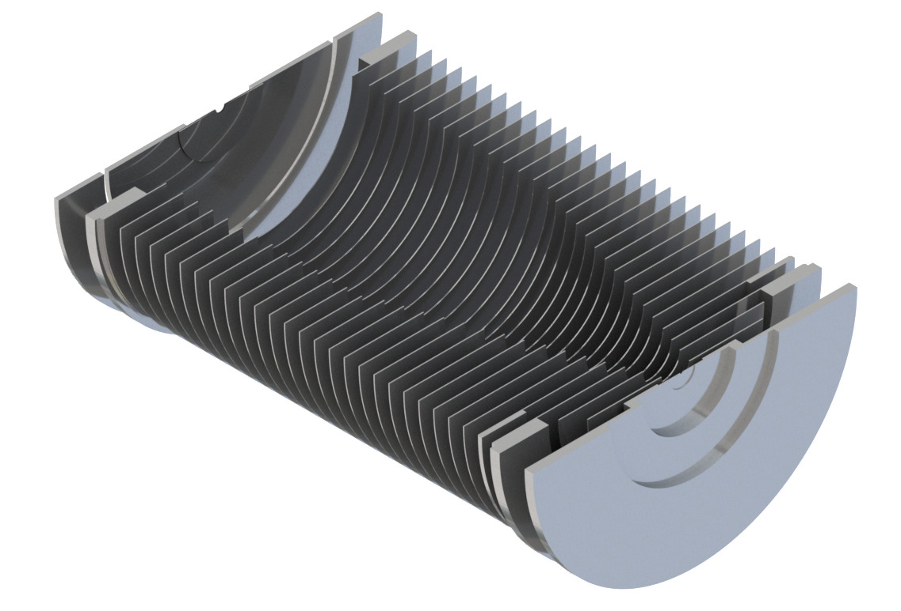
(b) 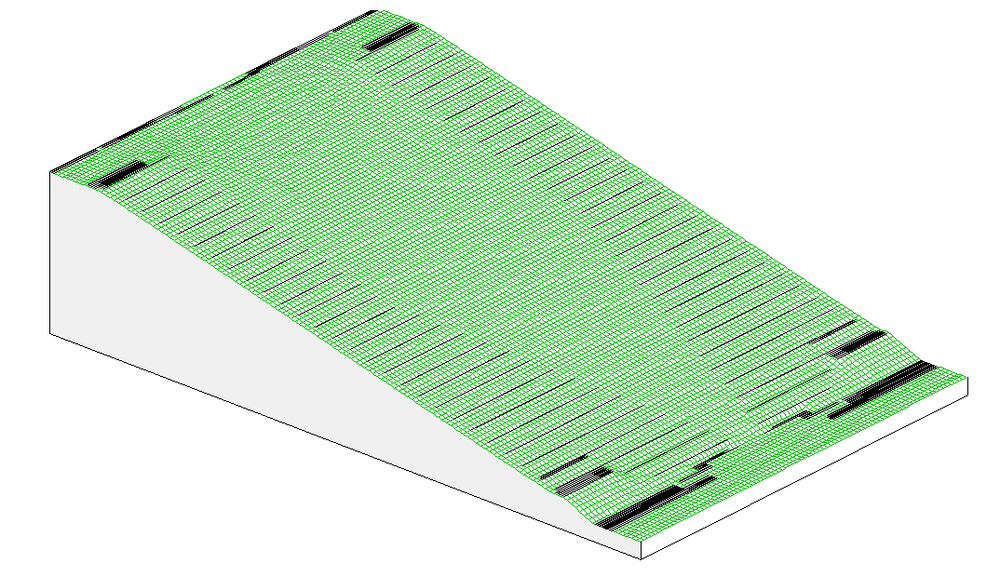
2.1.2.1 Reduced electric field
As the collisional energy depends not only on the electric field, E, but also on the buffer gas in the
reactor, it is convenient to use the reduced electric field, E/N, as a measure of the collisional energy
delivered to the ions. First, the electric field strength is defined by the potential difference
between the first and the last plate in the reactor divided by its length (Equation 2.1):
(2.1)
where V
is the so-called drift voltage and it is equal to the voltage difference between the first and the last plate
of the reactor, known as PTR Entry and PTR Exit, that can be adjusted by the user, and L is the
length of the drift tube, which is 9.36 cm in our newest instrument. For instance, a voltage
difference between first and last plates of 250 V corresponds to an electric field of 26.71
V/cm.
Similarly, the gas number density, N, is defined as the number of gas particles per unit volume and
can be calculated from the ideal gas equation to be (Equation 2.2):
(2.2)
where N is the Avogadro’s number
(6.02210
mol),
V (22414
cm
mol)
is the molar volume of an ideal gas at standard temperature and pressure conditions
P and
T,
T is the temperature of the
drift tube in Kelvin and P
is the gas pressure in the drift tube in mbar. For the standard operations conditions of 1 mbar and
100C, N is
1.9410
cm. The ratio E/N in this case would be 26.71 V
cm/1.9410
cm
1.3810
V cm. However,
it is usual to express the reduced electric field in a different unit called Townsend (Td), which corresponds
to 10 V
cm. Thus,
1.3810
V cm
corresponds to a value of 138 Td. Typically, a PTR-MS instrument is operated between 120 and 140 Td
but going as low as 80 Td or as high as 240 Td is sometimes crucial to get a good picture of the
dependence of the fragmentation with the collisional energy.
The ions inside the reactor reach a steady velocity, the so-called drift velocity,
v,
which is proportional to the electric field (Equation 2.3):
(2.3)
where K is the ion mobility, which depends on the ion’s mass and structure, and the temperature
and pressure in the reactor, and E the electric field in the drift tube. Note that the product of the ion
mobility and the electric field must not be mistaken with the kinetic energy, often referred to as KE.
Also note that the drift velocity does not represent the velocity of an individual ion but an
average over the ion cloud, and it can be also expressed in terms of the reduced mobility,
K,
and the gas number density at standard pressure and temperature,
N:
(2.4)
Moreover, the expression for the total mean kinetic energy of an ion, including both the thermal
energy and the energy coming from the electric field, was formulated by wannier1951bell
[wannier1951bell, wannier1952motion] (Equation 2.5):
(2.5)
The first term represents the contribution of the thermal energy to the ion’s kinetic energy, with
k
the Boltzmann constant and T the drift tube temperature. The second term relates to the
kinetic energy of the ion from being dragged by the electric field at a drift velocity
v, with
m
the mass of the ion. Finally, wannier1951bell added the last term as the
contribution to the ion’s kinetic energy from the randomly-oriented velocity of the
ions coming from collisions between the ions and the buffer gas molecules of mass
m, which would be 28.0 or
28.8 g/mol, depending on if N
or lab air is used as buffer gas.
However, to properly characterise the energy involved in an ion-molecule collision, the relative
energy of the participating bodies must be used instead of the total kinetic energy. This is
given by the the kinetic energy of the collision in the centre-of-mass frame of reference,
KE
(Equation 2.6) [mcfarland1973flow]:
(2.6)
where µ is the reduced mass of the 2-body system (Equation 2.7)
(2.7)
and the kinetic energy of the ion and the neutral are defined by Equation 2.8 and Equation 2.9,
respectively.
(2.8)
(2.9)
Combining the expressions above, KECM can be expressed as well as shown in Equation 2.10.
(2.10)
where the sub-index
refers to the neutral molecule in both an ion-buffer gas collision or an ion-analyte collision,
where only proton or charge transfer will occur in the latter case. The difference between
m and
m for an ion-buffer
gas collision is that m
is an average of the masses of the different species in the buffer gas, while
m
is the mass of the species the ion is colliding with in each case (e.g.
N or
O for lab air). It is also
important to bear in mind that v
and v are not necessarily
the same, as v
refers not only to the field-aligned velocity. Note that, as
v is
proportional to the E/N, the KECM is quadratic with the E/N, as shown in Figure 2.6 for cocaine and
2-butanone, which are two analyte molecules with a considerable mass difference and both are
mentioned in this thesis. Their mass difference results in more energetic collisions (10-15%) for cocaine
than for 2-butanone.
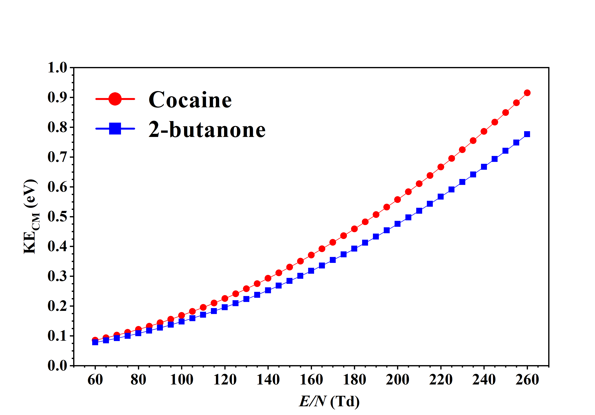
Contrary to the reduced electric field, the centre-of-mass kinetic energy is mass-dependent. The
centre-of-mass is used rather than the lab reference frame as the proton transfer reactions are inelastic
collisions because there is a transference of mass but still in the centre-of-mass reference frame
the sum of the linear momentum of each of the molecules is equal to zero both before and
after the collision. However, the main challenge when using Equation 2.10 is to measure
the drift velocity accurately enough. This can be done, for instance, using the Hadamard
transformation [doi:10.1002/rcm.7254], or it can be calculated from the ion mobility from
Equation 2.4.
The ions will predominantly collide with the buffer gas molecules. Equation 2.11 gives the
expression for the kinetic mean free path, MFP, defined as the average distance travelled between
collisions, if the colliding particles are considered hard-spheres [hirschfelder1954molecular].
(2.11)
N = 2.4110
m
at 1 mbar and 300 K and with d, the so-called kinetic diameter, which is
3.6410
m for N
[ismail2015gas], gives a mean free path of around 70 µm in the reactor, corresponding to
a viscous flow. If we compare this with the mass spectrometer, where pressure is around
10 mbar and N
is around 10
m, the
mean free path grows up to the km order of magnitude, becoming much bigger than the dimensions of
the chamber. In this case the flow is molecular and the predominant collisions are no longer with other
particles but with the walls of the chamber. The transition from the viscous to the molecular regime
occurs in the differential pumping region.
2.1.2.2 Radio frequency ion funnel
The Radio Frequency Ion Funnel (RFIF) in the reactor of our instrument is a novel piece of equipment
developed by KORE Technology Ltd that both delivers extra collisional energy and focuses the ions
towards the exit aperture of the drift tube, enhancing both sensitivity and selectivity of the PTR-MS
instrument.
As mentioned earlier, in the second half of the drift tube stack the electrode’s diameter gradually
decreases from 40 mm to 6 mm in a funnel-like configuration. The suitable electronics to provide these
funnel electrodes with an RF field are mounted in the instrument. These electronics provide the second
half of the drift tube’s electrodes with a signal of approximately 760 kHz and 200 V peak-to-peak in
resonance that we will refer to as RF field (see Figure 2.7). At any given time, adjacent funnel plates
are supplied with an RF field of opposite polarity. Also, this RF field can be turned on and off in the
front panel of the instrument and when it is superimposed to the DC field, which is always
on, we say the instrument is operating in RF mode. Furthermore, in RF mode we do not
use the reduced electric field, E/N, to refer to the collisional energy as in this mode the
electric field is not uniform in the drift tube. A comparison of the ion trajectory in the
second half of the drift tube in DC and RF modes is shown in Figure 2.8 for ions of m/z 19
at a drift voltage of 200 V which corresponds to around 120 Td in DC mode. The funnel
effect can be observed on Figure 2.8(b) achieving a higher ion density near the exit of the
reactor than in DC mode, even though a lower number of ions were flown in RF mode to
reduce simulation times because this mode is computationally more demanding than DC
mode.
(a)
(b) 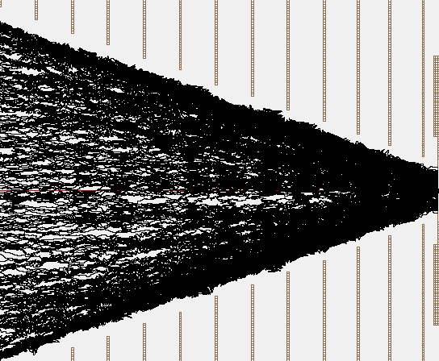
Besides this design from KORE Technology Ltd, there are other configurations available in the
market. For instance, the reactor of IONICON Analytik GmbH instruments can include the so-called
ION BOOSTER, which is a short, funnnel-like stack of electrodes at the end of the drift tube
[ionbooster]. On the other hand, the approach from TOFWERK consists of a resistive
glass drift tube that generates a more uniform electric field than the traditional electrode
stack, to which an RF field is superimposed from a quadrupole enveloping said drift tube
[krechmer2018evaluation].
2.1.2.3 Fast reduced electric field switching
Besides the RFIF, another of the recent hardware developments from KORE Technology Ltd, this time
in conjunction with the Defence Science and Technology Laboratory (DSTL), is the fast reduced
electric field switching, or just fast switching. It consists of a programmable 500 V power supply
unit that can quickly switch at a chosen frequency between two preselected PTR Entry
voltages in the range from 50 V to 450 V, which corresponds to roughly the interval from 10
Td to 250 Td. This unit can be retrofitted into any other PTR-ToF-MS instrument from
the same manufacturer. This technology has been applied to the detection of explosives
[doi:10.1021/acs.analchem.7b05211].
A previous E/N study of the molecule is needed to identify the characteristic product ions
beforehand. Then the two relevant PTR Entry voltage (E/N) values and the switching frequency are
selected. The lower limit of the switching frequency, while achieving optimal analytical results, is
around 1 Hz. This limit is a consequence of the time the reactor takes to clear out from product ions at
a different reduced electric field, the so-called “capacitance”, which is typically of around 150-200 ms.
The rise and fall times of the voltages given by the power supply unit are not symmetrical, but
as these are tens of milliseconds, these get masked out by the capacitance. A temporal
spacing of 25 ms has been found to give the best temporal resolution and also proper data
analysis is needed in order to discard the data acquired during the voltage changes. This
is done by means of a script I wrote in Matlab®, which is described in detail in section
2.2.3.
2.1.3 Differential pumping region and transfer lenses
When the ions leave the drift tube through the exit plate’s orifice, which has a
diameter of 400 µm, they enter the differential pumping region, where the transfer
lenses are. There is a pressure drop from the 1 mbar range in the drift tube to the
10 mbar
range in the differential pumping stage. This translates into a change in the type of flow, from viscous
flow in the drift tube to a molecular flow in the transfer lenses region and further downstream in the
mass analyser. This means that the mean free path of the ions gets bigger than the dimensions
of the chamber, and thus ion-wall collisions are predominant over ion-neutral or ion-ion
collisions.
The aim of the transfer lenses is to focus the ion beam and transport it to the mass spectrometer.
For this purpose, the ion beam is driven through a set of ring electrodes at different voltages. These ion
optics focus the ions in the centre of a pinhole in the same way optical lenses do with light. The pinhole
helps to clean the beam from chromatic aberrations, which translates into narrower peaks in the mass
spectra because the ion beam that reaches the mass analyser is less spatially spread out
This is qualitatively illustrated in Figure 2.9. Also, two pairs of deflectors (not included in
Figure 2.9) can be tuned to steer the beam to maximise the transmission into the mass
spectrometer.
It is important to note that a high potential gradient between exit plate and the first transfer optics
electrode can help to increase the transmission but can create a hard extraction of ions. In the case of
a hard extraction, ions are uncontrollably being fragmented beyond the exit plate in the
early stages of the transfer optics, where the density of ions is still high. This undesired
fragmentation can be avoided by setting the electric field between the exit plate and the first
electrode in the transfer optics to no more than a few V/cm. In a series of experiments not
included in this thesis, Renaud R. Dassonville and I made sure that in the standard operating
conditions of our PTR-MS instruments hard extraction was not occurring. This was checked by
monitoring the product ions from n-butylbenzene at different extraction and transfer lenses
voltages.
2.1.4 Mass spectrometer
The ion beam is transferred from the drift tube to the mass spectrometer (MS) via the transfer optics.
The MS detects the ions according to their mass-to-charge ratio and allocate them in a
histogram-like plot called spectrum. This requires a vacuum pressure in the flight tube of less than
10
mbar. I will indistinctly refer to mass spectrometer and mass analyser.
The mass-to-charge ratio is abbreviated to m/z and it refers to the ratio of the ions’ mass divided by their
charge. SI units are not used for the m/z. For simplicity, atomic mass units (amu) are used for the mass (1 amu =
1.6610
kg) and the number of fundamental electric charges are used for the charge (1 e =
1.6010
C). Depending on the mass resolution of the MS, m/z can be given as an integer (nominal mass) or as
a real number (monoisotopic mass).
2.1.4.1 Time-of-flight mass spectrometer
The time-of-flight mass spectrometers (ToF-MS, Figure 2.10) are the most widely mass spectrometers
used in PTR-MS.
A ToF-MS works as follows: when ions reach the entrance of the MS (pulser region), a pulsed (tens
of kHz) high voltage V of some kilovolts orthogonally repels them towards the other end of the flight
tube. Lighter ions will gain more speed than heavier ions, which means that they will reach the detector
faster. The time it takes an ion to reach the detector and its m/z are related by Equation 2.13, which
comes from the energy balance in Equation 2.12.
(2.12)
(2.13)
where m/z is the mass-to-charge ratio of the ion,
is the length of the flight
tube, t is the flight time and
is the ion’s charge. This allows to calculate the m/z of the ions as they are being collected at the
detector and build the mass spectrum by measuring the ions’ time of flight.
2.1.4.2 Reflectron
A spatially spread distribution of ions of the same m/z in the pulser region can result in different ion
velocities, and hence being detected at different times. This translates into broaden peaks in
the mass spectrum. To amend this a reflectron can be implemented in the flight tube of a
ToF-MS.
A diagram showing how a reflectron works is shown in Figure 2.11. It basically consists of a series
of electrodes with increasing voltage that will reverse the trajectory of the ions. When a cloud of ions
reaches the reflectron, ions of the same m/z but going faster go deeper in it, having a longer flight
distance than slower ions. This way, slow and fast ions of the same m/z will reach the detector at the
same time, having travelled different distances, yielding narrower peaks and improved mass resolution
when the mass spectrum is built.
2.1.4.3 Detector
Prior to detection, the individual ion signal needs to be amplified to a detectable level. A common
pre-amplification setup consists of two microchannel plates (MCPs), which are circular
plates of a few millimetre of thickness with an array of tubes that go from one face to the
other. These tubes form an angle with the ion trajectory and the second MCP is rotated
180
from the first one as shown in Figure 2.12 so ions cannot go through without hitting the
plates.
Incoming ions are accelerated to 2
kV before they hit the MCPs’ walls. Said MCPs are made of a high resistive material with a secondary
electron emission factor greater than one, so that when the incoming ion hits it, one or more electrons
are emitted per collision, generating an avalanche that can amplify a single event by up to a factor of
10. The
cascade electron signal will then reach the anode, where the time-to-digital converter (TDC) will
process the analogue signal and convert it into digital.
2.1.4.4 Calibration
As any other scientific instrument, the PTR-ToF-MS must be calibrated before performing any
experiment. Note that in this section we refer to calibration as the method to calculate the mass
conversions parameters, not the calibration to calculate a concentration from a signal in counts per
second. The mass conversions parameters can be calculated by selecting some reference peaks and
assigning them their exact m/z. Some peaks that can be used to calibrate the instruments are the
O isotope of hydronium
(HO,
m/z 21.023), NO
(m/z 29.998) and NO
(m/z 45.993). It is also useful to use the analyte ion that will be measured as a calibration
peak and other peaks resulting from compounds present in air, like protonated acetone
((CHO)H,
m/z 59.050). The TDC uses Equation 2.14 for this task doing a least squares fitting.
(2.14)
where m/z is the mass-to-charge ratio, t is the ion’s time-of-flight, and
t and
C are
parameters that depend in the mass range the instrument will measure and in some experimental
quantities like the length of the flight tube. Note that this equation is the same as Equation 2.13 for
t = 0
and =
.
2.2 Data analysis
2.2.1 Data acquisition, visualisation and treatment
The analogue data acquired by the PTR-ToF-MS is translated into digital files by the time-to-digital
converter (TDC) to be visualised and analysed with the proper software. An experiment can consist in
either a static measurement, yielding a stable signal throughout the experiment, or a transient
measurement, where the ion counts are time-dependent. These different types of experiments
are usually acquired as a mass spectrum in the form of a Galactic .spc file from Thermo
Fisher Scientific®, or as a temporal evolution of the mass spectrum, in the form of a .lst file,
respectively.
As mentioned earlier, a mass spectrum is the histogram-like plot of the counts of detected ions as a
function of their m/z which, in our case, is stored in .spc files. Figure 2.13(a) shows an example of a
mass spectrum visualised with the Thermo Fisher Scientific® GRAMS/AITM Spectroscopy Software,
which is adapted by KORE Technology Ltd to be used with their equipment. The software does the
time to m/z conversion following Equation 2.14.
On the other hand, the transient experiments are stored in .lst files. These files record the
timestamp (in microseconds) of each event in three consecutive bytes in hexadecimal notation, with the
most significant byte first, and they are accompanied by a text file containing information about the
experiment (.ini file). An event can be either the start of a cycle in the detector, always indicated by
0x000000 (i.e. t = 0 µs), or a detected ion (for instance, an ion detected at t = 12500 µs would be
recorded as 0x0030D4). This means that an .lst file holds all the information about the experiment and
can be plotted as both a cumulative mass spectrum as a function of the m/z or as a transient
experiment as a function of the experiment time. The software GRAMS/AITM allows to open the .lst
files as a mass spectrum, like that in Figure 2.13(a), or as the time-evolution of some particular
m/z, as shown in Figure 2.13(b). For the latter plot, the so-called regions of interest (ROI)
must be selected before starting the experiment, by selecting the left and right ends of
intervals of interest whose ion count will be integrated, displayed and updated as the data is
acquired.
(a)
(b) 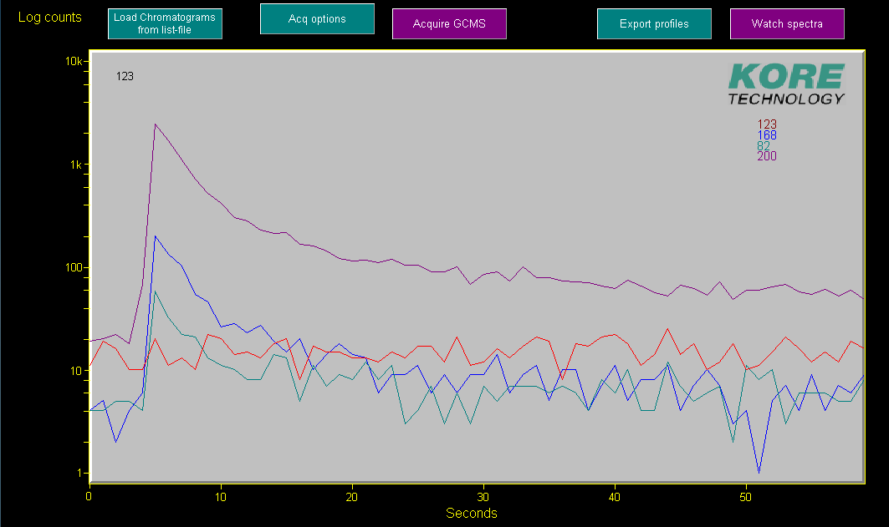
With a PTR-MS instrument, a lot of data can be acquired quite quickly so basic programming
knowledge comes in handy when dealing with these big datasets. One of the best options is to use the
Matlab® command tgspcread(), which reads Galactic .spc files from Thermo Fisher Scientific®. This
imports all the fields in the datafile into an object-oriented data type called struct, which allows
quick and easy extraction and manipulation of large amounts of data. In the case of the .lst
files, the extraction of the data has to be done without help from any library. It is a bit
more tedious, as it requires reading the hexadecimal file, building the mass spectra using
the parameters stored in the .ini file, do the time-mass conversion and extract the m/z of
interest for transient experiments. Using this as starting point, I wrote my own code to do the
data analysis. It extracts all the data from a whole study or experiment to analyse it in
Matlab®, measuring peak positions using the FWHM of the peaks, calculating peak intensities,
extracting transient data, subtracting background signals and assigning possible chemical
compositions.
2.2.2 Calculation of ion intensities
Once the data is acquired and stored in the files explained in the previous section, it can be analysed
and plotted for interpretation, although there are some concerns to take into account when doing
this.
The counting electronics in the PTR-ToF-MS assumes that each pulse measured at the MCP
corresponds to one ion. This can be not true if two or more ions arrive at the detector very close
together and their analogue signals overlap so that the TDC translates it as a single event. This
phenomenon is known as saturation and happens more often when a high concentration of a compound
is being measured. At a given m/z, the maximum number of counts per second the instrument can
measure corresponds to the number of cycles per second of the mass spectrometer, which
is the number of times the ions are pulsed each second. In other words, at a certain m/z
only one ion per cycle can be measured. Therefore, a compromise must be found when
the experiment is being designed to avoid situations of saturation while getting a suitable
signal. This is given by the rule of thumb that says that saturation occurs when the ion
signal at a certain m/z is more than 60% of the cycles per second in the time of flight. This
means that a peak can present saturation effects even before showing a distorted shape. For
instance, for a cycle length of 36 µs, the mass spectrometer will be pulsing at a rate of
27777
cycles per second. In this case, the 60% saturation limit would be at an ion signal of
16666
cps.
Peak saturation situations should be avoided when it occurs at product ion peaks, as it
can carry other effects like reagent ion depletion. However, in some scenarios they can be
worked around by calculating the ion intensities using the suitable isotopes in each case. The
O
isotope peak is used to calculate the reagent ion intensities of
HO
or O as their more
abundant O
peak is often saturated. The natural composition of oxygen is
O (99.76%),
O (0.03%) and
O (0.21%) [nistoxygen]. The
O isotope is found at m/z 21.023 for
HO
and at m/z 33.994 for O. However,
for NO it is better to use the
NO
at m/z 30.995 rather than the NO
at m/z 32.002 for two reasons: the
NO
isotope is more abundant and also it does not interfere with the signal of the isobaric compound
O at
m/z 32.
The C
isotope is often used to calculate product ion intensities in saturated peaks and to
verify composition assignments if the mass resolution is not enough to distinguish
between isobaric compounds. It is the second most abundant isotope (1.07%) after
C (98.93%), with
C is only present at 1
ppt [nistcarbon]. C
is obviously more useful with bigger molecules because normally the bigger the molecule,
the more carbons it will have, yielding an intensity of more than 10% at (m+1)/z of that
at m/z for molecules with ten or more carbon atoms. Of special interest are as well the
halogenated compounds containing Cl or Br, which produce very characteristic isotopic peaks.
Cl and
Cl
are naturally present at abundances of 75.76% and 24.24%, while for
Br and
Br
these are 50.69% and 49.31%, respectively [nistcl, nistbr]. Thus, Cl-containing
compounds shows a pattern of ratios ca. 3:1 at m/z and (m+2)/z, while for
Cl this
is 9:6:1 at m/z, (m+2)/z and (m+4)/z. For Br this is approximately 1:1 at m/z and (m+2)/z and for
Br it is
1:2:1 at m/z, (m+2)/z and (m+4)/z.
With these considerations in mind, for the rest of this thesis when an ion’s m/z is given with a
chemical composition, it will refer to the most abundant isotopologue. It is also quite common to
show the ion signal in normalised counts per second, ncps, by normalising the ion signals to
10
counts of reagent ion signal. For this, the proton affinity of the analyte must be known because proton
transfer from the water clusters can also occur and their ion signal must be considered when calculating
the ncps. However, in most of this thesis the data is shown in raw cps to ease the comparison with
other instruments, after being usually repeated two times and subtracted the background
signal.
2.2.3 Fast switching software
Analysing data from fast switching experiments can be tedious if needed to be done working manually
with each file. For this, and knowing already how to work with the experiment files, it was useful to
write a script in Matlab® together with a graphical user interface to analyse the data in a quicker way.
This interface is shown in Figure 2.14. It basically imports the suitable files, opens the cumulative mass
spectrum to select the regions of interest, calculates and plots the ion intensities splitting the data in
frames, and exports to an excel file in both counts per second and percentage together with the
experiment time and the E/N. Note that different colours are used in the raw and averaged data to
ease the visualisation.
(a)
(b) 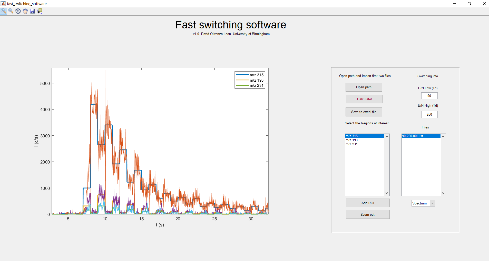
The files that this script imports are the .lst ones and its accompanying .ini files, which contain the
information of the fast switching experiment that is necessary to work with the data. This
comprehends, among other parameters, the number of phases, the number of cycles per phase, the total
number of cycles, the cycle period, the number of frames and the dead time of the switching. The
number of phases refers to the number of different values that the E/N takes during a single
experiment. This value is two for the fast switching experiments, which we will refer to as E/N low and
E/N high. The fast switching frequency is not explicitly recorded but it is given by the inverse of
multiplying the cycle period by the number of cycles per phase. For instance, for a cycle period of 40 µs
and 25000 cycles per phase, the switching frequency is 1 Hz. The total length of the experiment is not
recorded either but, similarly to the switching frequency, it can be calculated by multiplying
the cycle period by the total number of cycles. For example, a cycle period of 40 µs and
1.510
total cycles corresponds to a 1 minute experiment. Each of the time intervals in which the
drift tube is kept at the same E/N is called a frame. In a measurement lasting 60 seconds
at a fast switching frequency of 1 Hz there are 60 total frames and 30 frames per phase.
The dead time recorded in the .ini file in this case refers to that given by the delay in the
electronics to supply the right voltage to the drift tube, i.e. the rise and fall times, and it is
around 70 ms. The software automatically ignores the interval three times bigger than this
dead time to account for the capacitance of the reactor, which was explained in section
2.1.2.2.
If the name of the files when doing the experiment is recorded is set to [low E/N]-[high E/N]-[file
number], the script automatically reads and writes in the output file the values of the low and high
E/N. If not, they must be manually added. The data inside each frame can be exported in raw format
or averaged. For steady experiments like the one shown in Figure 2.14(a), the data from all the frames
from a phase (i.e. high or low E/N) can also be averaged like it is shown in this figure.
Obviously, this does not make sense for transient measurements like that in Figure 2.14(b).
Once the data analysis is finished, the results can be exported. The format these files are
saved at allows easy double-y axis plot of the ion intensities and E/N as a function of the
experiment time, as it is shown in Figure 2.15, for a (a,c) steady-state and (b,d) transient
measurement.
(a) 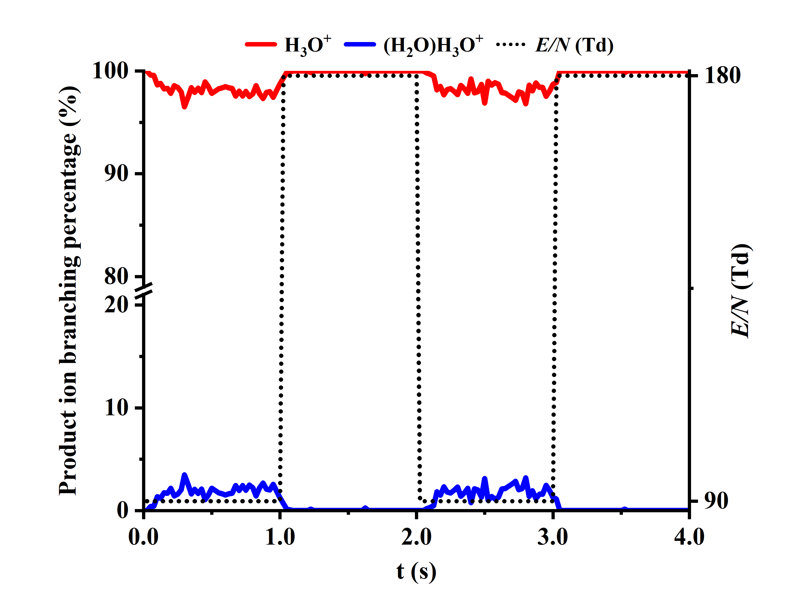
(b) 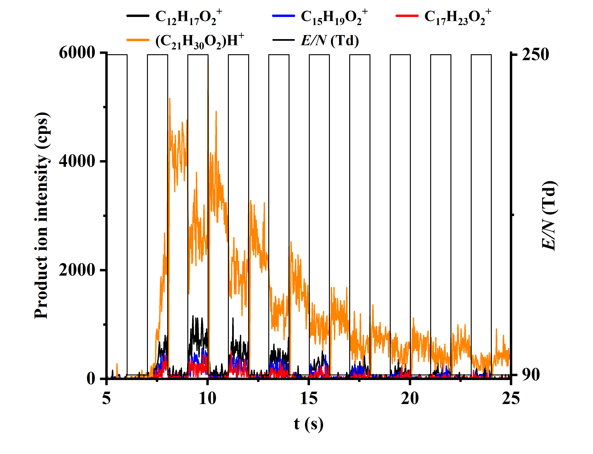
(c) 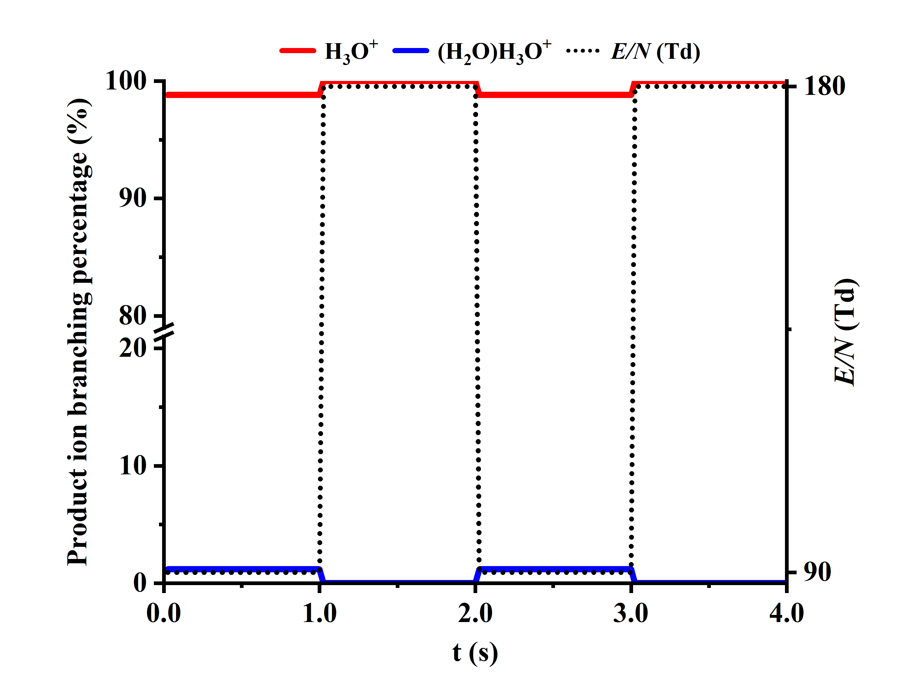
(d)
2.3 PTR-MS Add-ons
Besides the essential components described earlier in this chapter, there are some accessories that can
be coupled to a PTR-MS instrument for different purposes. There are many interesting devices
available in the market, like the CHARON real-time aerosol inlet [muller2017direct] or the PREFICS
pre concentrator with chromatographic separation [prefics]. The ones explained in this section are the
ones used for the experimental work included in this thesis.
2.3.1 Thermal Desorption Unit
For many applications, PTR-MS has been demonstrated to be a sensitive tool, yet the primary method
in homeland security is IMS. Most substances of concern in this sector, including drugs and explosives,
as well as in other fields have a small vapour pressure at room temperature, which challenges their
identification. These are often referred to as semi-volatile organic compounds (SVOCs). The sampling
method is then critical in the detection of these traces.
This issue has been addressed in many interesting ways. For instance, patents for hand-held suction
systems capable of identifying small quantities of explosives were granted to conrad1992hand and
carroll1992hand [conrad1992hand, carroll1992hand]. jjunju2015hand also created a portable
tool to detect nitroaromatic explosives on-site via atmospheric pressure chemical ionisation that
can operate for 12 h in one charge [jjunju2015hand]. Additionally, the development of a
biomimetic electronic dog’s nose by staymates2016biomimetic is a exciting new approach
[staymates2016biomimetic].
Swab desorptions are commonly used in IMS and the same approach can be brought into PTR-MS.
KORE Technology Ltd has created a thermal desorption unit (TDU, Figure 2.16) which can be used to
study SVOCs together with a PTR-MS device. This was used to study the detection of explosives
reaching limits of detection (LoD) of nanograms [RN445] and to analyse polyaromatic hydrocarbons
[blenkhorn2019novel]. The TDU works with polytetrafluoroethylene (PTFE) swabs mounted in a
cardboard frame (shown in Figure 2.16(a)) onto which the targeted compounds are deposited.
Then, the swab is inserted in the TDU, whose plates come together clamping the swab
and creating a high-quality circular seal. The metal plates are kept at high temperature
(150C)
and a carrier gas is flown through their holes, pulling the analyte towards the inlet pipe, whose surfaces
are passivated (treated with SilcoNert® 2000) to minimise adsorption. This creates a desorption profile
like the one in Figure 2.17, where the two main fragment ions from trace amounts of the desorption of
heroin are shown. The duration of the desorption depends on many factors, being some of them the
volatility of the analyte, the temperature of the inlet and TDU and the carrier gas flow. It usually takes
between 60 and 120 seconds for a sample to be completely desorbed into the instrument
after the swab has been inserted in the TDU and its jaws have clamped together. After
the measurement is finished, the TDU can be opened to extract the swab, which can be
reused.
(a)
(b) 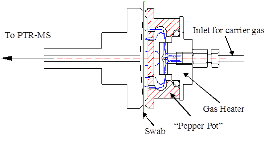
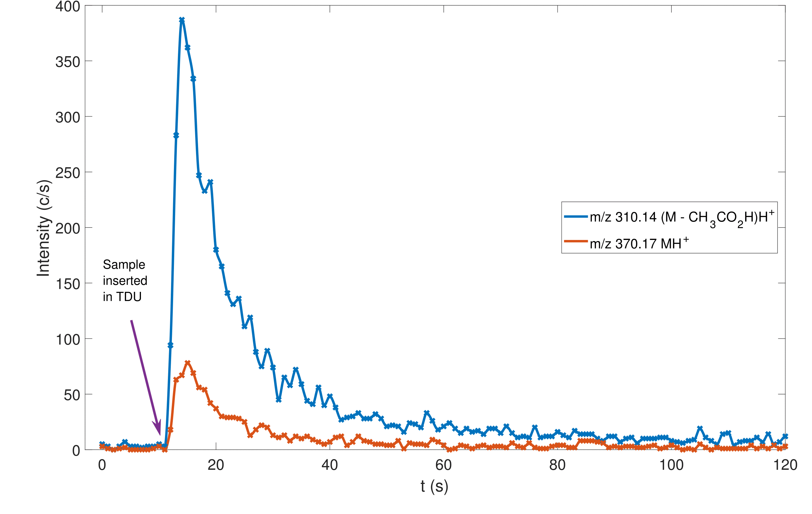
2.3.2 FastGC
The fastGC (IONICON Analytik GmbH, Austria) is an add-on that can be used to aid in the product
ion identification process separating the analyte molecule from possible contaminants and
impurities.
The working principle of the fastGC is the same as that of gas chromatography (GC) systems,
where the components of a gas mixture (mobile phase) present different retention times when flowing
through a liquid or solid (stationary phase) packed inside a capillary column, which temporarily
separates them. This separated mixture can be then injected into an analytical instrument for
compound identification, where ions peaks occurring at the same retention time as the parent ion
correspond to product ions. The main differences between GC and fastGC are that GC
columns are tens of meters long, while fastGC ones are 10 meters long or less, and also that
the heating ramp in fastGC is up to forty times faster than in conventional GC systems.
These make possible to perform spectral analysis in less than one minute with a fastGC
add-on.
We have used the fastGC in conjunction with a PTR-ToF 8000 (IONICON
Analytik GmbH, Austria) to study the reactions of several ketones with
HO
[malaskova2019compendium], where this add-on was used to ease the ion identification as the purity of
the ketones was in the range 97-99% and also decomposition of the sample could have occurred during
storage. This fastGC is a modification of that used by ruzsanyi2013multi and romano2014wine
[ruzsanyi2013multi, romano2014wine], so only the differences with these will be briefly mentioned
here. The stationary phase in our system was a MXT-1 column (10 m × 0.53 mm, film thickness 0.25
µm, dimethyl polysiloxane phase, Restek, USA), which was heated from room temperature up to
240C in
2 minutes and 40 seconds. Also, a a 10-port passivated valve (VICI AG, Switzerland) and a three-way
gas valve made from polyether ether ketone (PEEK) replaced the four three-way valves and needle
valve in the previous design. In the oven which houses the drift tube, all sections of the inlet
system are mounted to avoid cold spots. This updated configuration allowed the sample loop
to be constantly filled and the capillary column to be constantly back-flushing with the
carrier gas. The carrier gas and make-up gas flows used were 8 ml/min and 20 ml/min of 6.0
N.
2.3.3 Liquid Calibration Unit
The liquid calibration unit (LCU, IONICON Analytik GmbH, Austria) is a standalone device that can
be coupled to trace gas analysers for calibration purposes where liquid standards are evaporated into a
gas stream to yield known trace concentrations.
The working principle of the LCU has been explained in detail by fischerlcu
[fischerlcu]. The liquid sample is pumped from its container by a liquid flow controller
into the nebuliser (X175, Burgener Research®), where it mixes with the carrier gas
(N
or zero air). The nebulisation process creates a stream of micro-droplets
that is then injected into the evaporation chamber. This chamber is held at
100C to
continue the process of evaporation, leading in a continuous flow of a known trace gas dilution that is
then injected through a heated sampling line into the analytical instrument.
We used the LCU to study the reactions of several ketones with
HO
in humid conditions [malaskova2019compendium], where this add-on was not used to calibrate the
instrument but to create a steady signal of ketones samples in humid conditions. The sampling vials, kept
at 30C,
contained trace quantities of ketones diluted in 100 ml of purified water and were connected to the
liquid inlet of the LCU. The liquid sample flow was of 35 µl/min, which with the carrier gas
(N)
flow of 950 ml/min gave an absolute humidity of 5%.